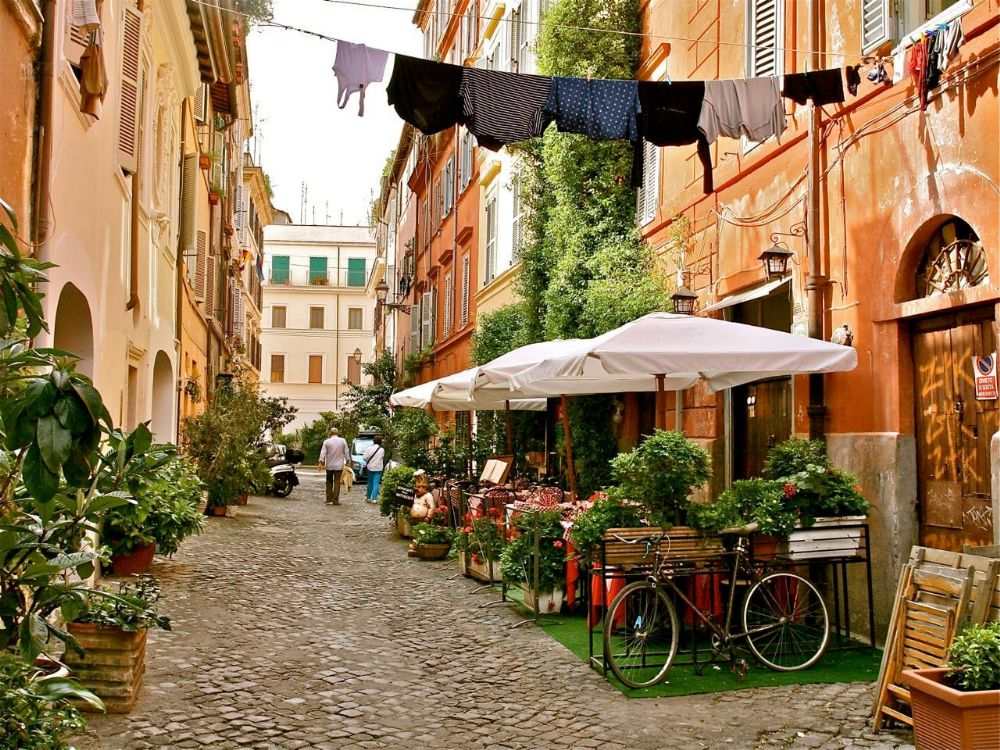

ROME • LOCAL EXPERIENCE
Learn about the city from a local perspective, discover italian cuisine popular roots, and the history that surrounded them

Not an official city tour, just an informal walk. I'm a Roman student who simply wants to share what he loves about his city.
As an unofficial tour, our walk around Trastevere won't follow a pre-fixed script. You can ask questions, interrupt, change the pace, or simply stop whenever you want.
There is no fixed schedule. The date and time of each walk can be arranged simply by contacting me through the Contact section below.
NOTE: for the whole August and September, it is recommended to have the walk in the late afternoon to avoid the hottest hours of the day.
As an unofficial food tour, there is no fixed price.
Tips are the only form of monetary contribution we can accept, as a token of appreciation for the experience.
Our walk will take us around Trastevere, one of the most visited yet genuinely "Roman" neighbourhoods. Tour sessions will be really dinamic, as Trastevere is well known as street food neighbourhood.
Our walk will first stop to get the most typical appetizer, specifically from Rome, that is ordered at the restaurant before pizza. Supplì is just a rice ball, filled with tomato sauce and stringy mozzarella, covered with a simple and crispy breading. Discover why it's called "supplì al telefono".
The second stop will show something most foreign people don't expect before coming to Italy. Round pizza, served in restaurants, isn't the most common way of eating the most famous Italian product. Most daily consumers prefer to get their pizza cut into rectangular slices, choosing from an often limited but well-produced list of toppings, to take away.
Following two really traditional tastings, Trapizzino represents an example of using classic recipes under a new shape. Soft triangles of bread are well-filled with sauces like pollo alla cacciatora, polpette al sugo and coda alla vaccinara. As the most consistent tasting, it is recommended to keep some room in your stomach for this stop.
Trapizzino may have satiated many, but you can still trust the Italian saying "there's always room for one (or two) desserts". Maritozzo is a sweet bun filled with cream, which is supposed to melt in your mouth with no effort.
A culinary tour in Trastevere can only end with the most typical street food: Gelato. Recognising tourist traps for Gelato is way easier than doing that with other dishes. Always beware of bright colors and unnatural shapes in ice cream containers. Fatamorgana offers a wide choice of flavours, each designed by the producers, still preserving a high quality service.
You're going to taste the most consumed meals in Rome: street food means shorter waiting times, low prices, while preserving the variety of restaurants food.
Taking pizza to school for recess, and having a gelato while walking are genuinely the most Italian activities I can think of.
Unlike many may argue, Roman cuisine is pretty much open to experimentations and new flavours, which means that Trastevere is like an open space culinary workshop.
However, most of the places we're going to visit follow the Italian cuisine principle of "getting the best out of poor ingredients", which is what makes Italian cuisine so unique.
Get in touch to arrange a walk around Trastevere.
+39 3661072400
@teo126
grechiteo@gmail.com
I'm a 21-year-old Roman student who enjoys sharing his knowledge about things he likes with other people.